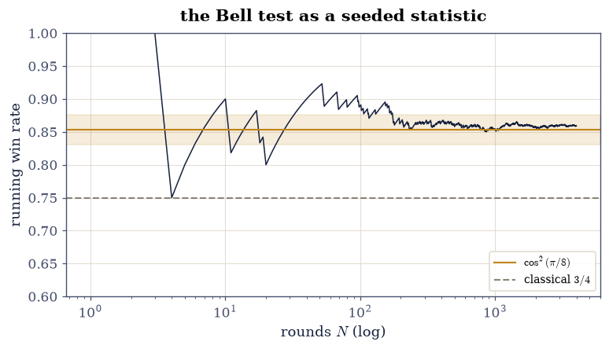
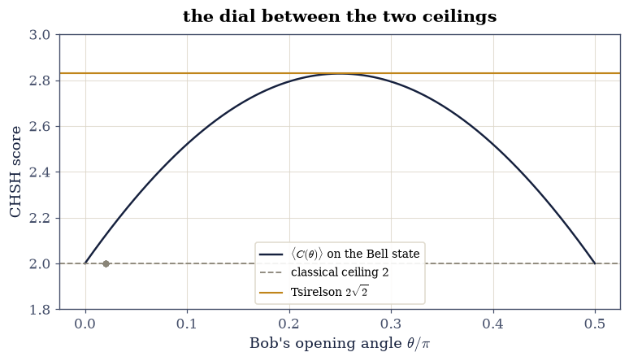

9.3 The CHSH Game: Tsirelson’s Bound is an Eigenvalue#
Notebook overview#
The CHSH game is the cleanest confrontation physics ever staged: two players, two questions each, a correlation score — and a hard ceiling of \(2\) for any strategy built from pre-agreed answers. Quantum mechanics scores \(2\sqrt2\). Experiments agree with quantum mechanics. Something in the classical worldview has to give, and Bell-test experiments earned the 2022 Nobel Prize for showing it gives in the laboratory.
This notebook’s claim is that the whole confrontation is linear algebra
the course already owns. The classical ceiling is a finite enumeration:
sixteen deterministic strategies, each scoring exactly \(\pm2\) — integers,
gated with ==. The quantum score is the largest eigenvalue of one
\(4\times4\) Hermitian matrix, computed by eigvalsh at rounding and by
SymPy exactly; the Bell pair of
§9.2 is its top eigenvector. And
the ceiling above that — Tsirelson’s bound, the statement that quantum
mechanics itself can do no better — falls out of a one-line operator
identity for \(C^2\) that the reader verifies directly.
How to read a check. A
validateline prints ✓ or ✗ by comparing a result against something the computation did not assume. A ✗ flags a mismatch to investigate, never a verdict on its own.
Scope. The inequality is Clauser–Horne–Shimony–Holt [CHSH69]; the quantum ceiling is Tsirelson’s [Cirelson80]; Nielsen and Chuang [NC10] §2.6 gives the standard treatment. The states and measurements are §9.1’s and §9.2’s.
Theory in brief#
The game, and the classical ceiling#
A referee sends Alice a bit \(x\) and Bob a bit \(y\), uniformly. Each returns a bit; they win when \(a \oplus b = x \wedge y\) — answers must agree unless both questions were \(1\). Writing answers as \(\pm1\) variables \(a_x, b_y\) fixed in advance (a deterministic local strategy), the score is
One of \(b_0 + b_1\) and \(b_0 - b_1\) is always \(0\) and the other \(\pm2\), so every deterministic strategy scores exactly \(\pm2\) — the CHSH bound \(|\mathcal{S}| \le 2\) is not merely a bound, it is where all sixteen strategies land. Shared randomness only mixes them, so it cannot help. In game form the best classical win rate is \(3/4\): agree always, and lose only the \((1,1)\) round.
The quantum score is an eigenvalue#
Replace the fixed answers by measurements on the §9.2 Bell pair: observables \(A_0, A_1\) for Alice and \(B_0, B_1\) for Bob, each with spectrum \(\{\pm1\}\), assembled into the CHSH operator
The achievable score with a shared state \(|\psi\rangle\) is \(\langle\psi|C|\psi\rangle\), so the best quantum score for these measurements is \(\lambda_{\max}(C)\) — an eigenvalue problem. At the standard optimal choice (\(A_0 = \sigma_z\), \(A_1 = \sigma_x\), Bob’s pair the \(\pm45°\) rotations of Alice’s) the spectrum is \(\{2\sqrt2, 0, 0, -2\sqrt2\}\), and the Bell state is the top eigenvector.
Tsirelson: why \(2\sqrt2\) and no further#
Squaring Eq. 305 and using \(A_x^2 = B_y^2 = I\),
so \(\lVert C\rVert^2 \le 4 + \lVert[A_0,A_1]\rVert\, \lVert[B_1,B_0]\rVert \le 4 + 2\cdot2 = 8\): no choice of measurements and state beats \(2\sqrt2\) [Cirelson80]. The commutators are the whole story — classical physics has none, and pays with the difference between \(2\) and \(2\sqrt2\).
The game at the optimum#
At the optimal measurements each correlation is \(\langle A_x \otimes B_y\rangle = \pm1/\sqrt2\) (the sign flipping only at \((1,1)\)), and the win rate is
against the classical \(3/4\) — the gap a Bell-test experiment measures.
Setup#
Data and restated instruments only: the Pauli matrices, the Bell state, and the four optimal observables as explicit constants. The strategy enumeration, the CHSH operator, the Tsirelson identity and the game simulator are all built in the exercises, where they are the lesson.
The Setup below holds this notebook’s data and instruments — nothing you are asked to build. It is collapsed so the building stays yours; expand it whenever you want the details.
Exercise 1: Sixteen strategies, one integer verdict#
Eq. 304 quantifies over every deterministic local strategy —
and there are only sixteen, so the quantifier is a for loop and the
verdict is exact integer arithmetic.
Part a) Enumerate all sixteen assignments \((a_0, a_1, b_0, b_1)
\in \{\pm1\}^4\) with itertools.product, compute each score
Eq. 304, and gate the enumeration’s two facts exactly:
every score equals \(+2\) or \(-2\) (not merely \(|\mathcal{S}| \le 2\)
— the factored form makes one bracket vanish, so the ceiling is where
everyone lands), split eight and eight.
Part b) Gate the game reading: for each strategy compute the win
rate over the four equally likely question pairs (win when
\(a \oplus b = x \wedge y\), with \(\pm1 \to\) bits), and gate that the
best deterministic win rate is exactly \(3/4\) — a rational, compared
with == after clearing the denominator of 4.
scores: [-2, 2] — split 8 at +2, 8 at -2
best deterministic win count: 3 of 4 (rate 0.75)
Validation 1#
✓ all sixteen deterministic strategies score exactly +-2 (Eq. 1) [integer arithmetic, compared exactly: one bracket of the factored form always vanishes, so the classical ceiling is not approached — it is inhabited]
✓ and the best classical win rate is exactly 3/4 [the always-agree strategies lose only the (1,1) round; nothing deterministic does better, and shared randomness can only mix what is enumerated here]
True
Exercise 2: The quantum score is an eigenvalue#
Eq. 305 compresses the entire quantum strategy space (for fixed measurements) into one Hermitian matrix. This exercise builds it and reads the score off its spectrum — in both arithmetics.
Part a) Write chsh_operator(A_pair, B_pair) assembling
Eq. 305 with np.kron. On the Setup’s optimal
measurements, gate: \(C\) Hermitian to \(10^{-15}\), and its sorted
spectrum equal to \((-2\sqrt2, 0, 0, 2\sqrt2)\) to \(10^{-14}\) by
np.linalg.eigvalsh.
Write this one yourself — it is four Kronecker products and two sums, and it is the bridge from game to eigenvalue problem.
Part b) The same spectrum, exactly: rebuild \(C\) in SymPy with
sp.nsimplify(..., [sp.sqrt(2)]) and gate that its eigenvalues are
exactly \(\{2\sqrt2, 0, -2\sqrt2\}\) as symbols — the chapter’s
exact-versus-float thread at its most famous number.
Part c) Gate the achiever: \(\langle\mathrm{Bell}|C|\mathrm{Bell} \rangle = 2\sqrt2\) to \(10^{-13}\), and the overlap between the Bell state and the top eigenvector has modulus \(1\) to \(10^{-12}\) — the maximally entangled state of §9.2 is the extremal eigenvector, which is why entanglement is the resource the game spends.
C Hermitian to 0.0e+00; spectrum [-2.82842712 0. 0. 2.82842712] vs (+-2sqrt2, 0, 0): worst 4.4e-16
SymPy eigenvalues: [-2*sqrt(2), 0, 2*sqrt(2)] — exactly (+-2 sqrt 2, 0): True
<Bell|C|Bell> = 2.828427124746; overlap with the top eigenvector: 1.000000000000
Validation 2#
✓ the CHSH operator's spectrum is (+-2 sqrt 2, 0, 0) at rounding (Eq. 2) [eigvalsh lands within 4.4e-16: the whole quantum strategy space for these measurements, spoken as four numbers]
✓ and SymPy says the eigenvalues are +-2 sqrt 2 and 0 — exactly [the subject's most famous number is algebra, not measurement: an exact eigenvalue of a 4x4 matrix over Q(sqrt 2)]
✓ the Bell state achieves the ceiling as the top eigenvector [score 2.828427125 with eigenvector overlap 1 to rounding — 9.2's maximal entanglement, spent as an extremal eigenvector]
True
Exercise 3: Tsirelson’s ceiling, from one identity#
The eigenvalue said \(2\sqrt2\) for these measurements. Eq. 306 says nothing does better — and it is an identity the reader can check with four matrix products.
Part a) Verify Eq. 306 directly on the optimal measurements: \(C^2 - \bigl(4I + [A_0,A_1] \otimes [B_1,B_0]\bigr)\) entrywise below \(10^{-14}\). Report the two commutator norms — each \(\lVert\cdot\rVert_2 = 2\) to \(10^{-13}\), the anticommuting maximum — so the chain \(\lVert C\rVert^2 \le 4 + 4 = 8\) closes at this instance’s exact value.
Part b) Sample the ceiling: for 200 seeded measurement quadruples — observables \(\mathbf{n}\cdot\boldsymbol{\sigma}\) on seeded random axes, spectrum \(\{\pm1\}\) by construction — gate \(\lambda_{\max}(C) \le 2\sqrt2 + 10^{-12}\) every time (one-sided: sampling cannot prove the bound, but it can lose to it, and it never does), and report the largest value found beside the ceiling.
C^2 identity to 8.9e-16; commutator norms 2.000000000000, 2.000000000000 (anticommuting maximum 2)
200 seeded measurement quadruples: largest lambda_max 2.825731 against the ceiling 2.828427, 0 violations
Validation 3#
✓ C^2 = 4I + commutator x commutator, verified entrywise (Eq. 3) [identity at 8.9e-16 with both commutator norms at the anticommuting maximum 2 — the ||C||^2 <= 8 chain closes, and the absent classical commutators are the whole 2 vs 2 sqrt 2 story]
✓ and no sampled measurement choice beats Tsirelson (one-sided) [largest of 200 seeded quadruples: 2.8257 <= 2 sqrt 2 — sampling cannot prove the theorem, but it can lose to it, and it lost 200 times]
True
Exercise 4: The game, played#
Eq. 307 prices the quantum advantage as a win rate. Here the seeded generator plays a Bell test: the referee’s bits, the Born-rule correlations of §9.1, and a pre-stated statistical band.
Part a) Gate the four correlations first, as identities: \(\langle\mathrm{Bell}|A_x \otimes B_y|\mathrm{Bell}\rangle = \pm1/\sqrt2\) (positive except at \((x,y) = (1,1)\)) to \(10^{-13}\) — the numbers a laboratory tabulates.
Part b) Simulate \(N = 4000\) seeded rounds: uniform question bits; outcomes drawn with the agreement probability \((1 + E_{xy})/2\) implied by Part a’s correlations (marginals vanish for the Bell state); win when \(a \oplus b = x \wedge y\). Gate the win rate inside \(\cos^2(\pi/8) \pm 4\sqrt{p(1-p)/N} = 0.8536 \pm 0.0224\), and gate that the classical \(3/4\) lies outside the same band — the refutation as a seeded statistic with its error bar stated first. Draw the running win rate against both rules.
correlations: {(0, 0): 0.707107, (0, 1): 0.707107, (1, 0): 0.707107, (1, 1): -0.707107} worst gap 1.1e-16
win rate 0.8590 against cos^2(pi/8) = 0.8536 (band +-0.0224); classical 3/4 sits 4.6 bands below the target
Validation 4#
✓ the four Bell-pair correlations are +-1/sqrt2 with one flipped sign [identities before statistics: the (1,1) sign flip is what lets one strategy win rounds that classical agreement must lose [1.11022e-16 < 1e-13]]
✓ 4000 seeded rounds land on cos^2(pi/8), four sigma from classical [rate 0.8590 inside 0.8536 +- 0.0224, with 3/4 excluded by the same pre-stated band — the Bell-test verdict, as a seeded statistic]
True

Fig. 170 The CHSH game over 4000 seeded rounds: the running win rate (ink) settling into the pre-stated four-standard-error band (shading) around the quantum value \(\cos^2(\pi/8) \approx 0.8536\) (amber rule), while the best classical win rate \(3/4\) (grey rule) sits more than four bands below. The early wandering is small-sample noise; the verdict is the separation between the two rules, which no enlargement of \(N\) can blur — it only tightens the band around the quantum line.#
Exercise 5: The dial from classical to quantum#
How does the advantage switch on? Fix Alice’s observables and the Bell state, and let Bob’s measurement pair rotate: \(B_0, B_1\) at angles \(\pm\theta\) from \(\sigma_z\) in the \(zx\) plane. The score has a closed form, and the dial connects the two ceilings.
Part a) Write the swept pair \(B_0(\theta) = \cos\theta\,\sigma_z + \sin\theta\,\sigma_x\), \(B_1(\theta) = \cos\theta\,\sigma_z - \sin\theta\,\sigma_x\), and gate the closed form \(\langle\mathrm{Bell}|C(\theta)|\mathrm{Bell}\rangle = 2(\cos\theta + \sin\theta)\) to \(10^{-13}\) on a 300-point sweep of \(\theta \in [0, \pi/2]\).
Part b) Gate the dial’s three landmarks: the score at \(\theta = 0\) and \(\theta = \pi/2\) equals the classical \(2\) to \(10^{-13}\) (aligned or anti-aligned measurement pairs commute — no commutator, no advantage); the maximum over the sweep lands within \(10^{-4}\) of \(2\sqrt2\) (the summit is quadratic in the grid spacing); and the maximiser sits at \(\theta = \pi/4\) within one grid step. Draw the curve over the strip of sixteen classical scores.
closed form 2(cos + sin): worst 8.9e-16
endpoints vs classical 2: 4.4e-16; peak within 9.8e-06 of 2 sqrt 2, argmax within 0.50 grid steps of pi/4
Validation 5#
✓ the swept score is 2(cos theta + sin theta), exactly the closed form [300 sweep points: one family of measurements, one trigonometric identity — the dial between the ceilings [8.88178e-16 < 1e-13]]
✓ and the dial connects 2 (commuting ends) to 2 sqrt 2 (at pi/4) [endpoints on the classical ceiling to 4.4e-16 — commuting measurements earn no advantage — with the summit at pi/4 within one grid step and 9.8e-06 of Tsirelson]
True

Fig. 171 The quantum score \(\langle\mathrm{Bell}|C(\theta)|\mathrm{Bell}\rangle = 2(\cos\theta + \sin\theta)\) as Bob’s measurement pair opens from \(\theta = 0\) to \(\pi/2\) (ink), over the sixteen classical strategies — all sitting exactly on \(\pm2\), the eight at \(+2\) collapsing onto the single grey dot on the classical rule (the eight at \(-2\) are off-scale below). At the commuting endpoints the quantum score touches the classical ceiling and no advantage exists; at \(\theta = \pi/4\) it reaches Tsirelson’s \(2\sqrt2\) (amber rule). The distance between the rules is bought entirely by the commutators of Eq. 3.#
Notebook summary#
The classical ceiling is inhabited, not approached. All sixteen deterministic strategies scored exactly \(\pm2\) (integers, eight each way), and the best game win rate was exactly \(3/4\) — the factored form of Eq. 304 kills one bracket every time, and the enumeration is the proof.
The quantum score is an eigenvalue, twice over. The CHSH operator’s
spectrum came out \((\pm2\sqrt2, 0, 0)\) at \(10^{-15}\)-scale by
eigvalsh and exactly by SymPy over \(\mathbb{Q}(\sqrt2)\); the Bell
state achieved \(2\sqrt2\) as the top eigenvector with overlap \(1\) to
rounding — §9.2’s resource, spent.
Tsirelson is one identity. \(C^2 = 4I + [A_0,A_1]\otimes[B_1,B_0]\) held entrywise at \(9\times10^{-16}\) with both commutator norms at their anticommuting maximum \(2\), closing \(\lVert C\rVert^2 \le 8\); 200 seeded measurement quadruples never beat the ceiling.
The laboratory version came out as stated. The four correlations were \(\pm1/\sqrt2\) as identities; 4000 seeded rounds won at a rate inside the pre-stated band around \(\cos^2(\pi/8) = 0.8536\), with the classical \(3/4\) more than four bands below. The dial \(2(\cos\theta + \sin\theta)\) connected the ceilings: score \(2\) exactly at the commuting endpoints, \(2\sqrt2\) at \(\theta = \pi/4\).
Methods introduced. Exhaustive strategy enumeration as a gate,
chsh_operator (correlations to one Hermitian matrix), SymPy exact
eigenvalues over \(\mathbb{Q}(\sqrt2)\), the \(C^2\) commutator identity,
one-sided ceiling sampling, and a Bell test as a seeded statistic with
its error bar stated in advance.
Outlook#
Device independence. The score \(2\sqrt2\) certifies the state and measurements up to local isometry — a Bell violation is a self-test, which is why CHSH underwrites quantum key distribution protocols whose security assumes nothing about the hardware.
More questions, other games. Three-player games (GHZ’s home turf, with §9.2’s state winning with certainty where classical strategies cap at \(3/4\)) and the magic square trade the eigenvalue for operator-algebra constraints.
The commutator as a resource meter. Eq. 306 prices the advantage by \(\lVert[A_0,A_1]\rVert\) — the same object §9.4 meets when noise shrinks the Bloch ball and drags the achievable score back toward \(2\).
Semidefinite ceilings. Tsirelson’s bound is the first level of the NPA hierarchy: quantum correlation sets characterised by psd constraints — the chapter’s Choi story and §3.3’s machinery, scaled up to games.
Boris S. Cirel'son. Quantum generalizations of Bell's inequality. Letters in Mathematical Physics, 4(2):93–100, 1980. doi:10.1007/BF00417500.
John F. Clauser, Michael A. Horne, Abner Shimony, and Richard A. Holt. Proposed experiment to test local hidden-variable theories. Physical Review Letters, 23(15):880–884, 1969. doi:10.1103/PhysRevLett.23.880.
Michael A. Nielsen and Isaac L. Chuang. Quantum Computation and Quantum Information. Cambridge University Press, Cambridge, 10th anniversary edition, 2010. doi:10.1017/CBO9780511976667.